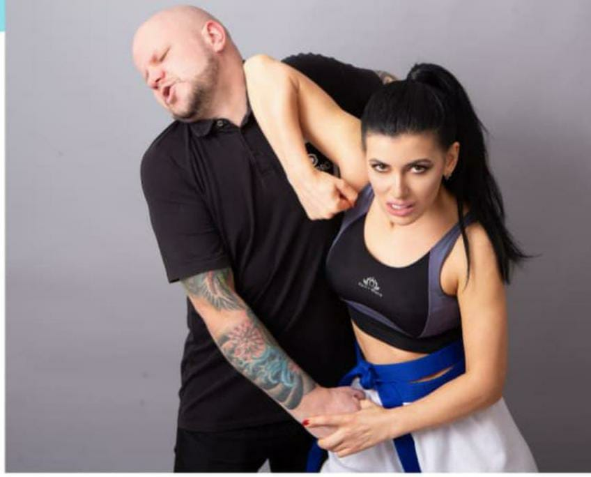
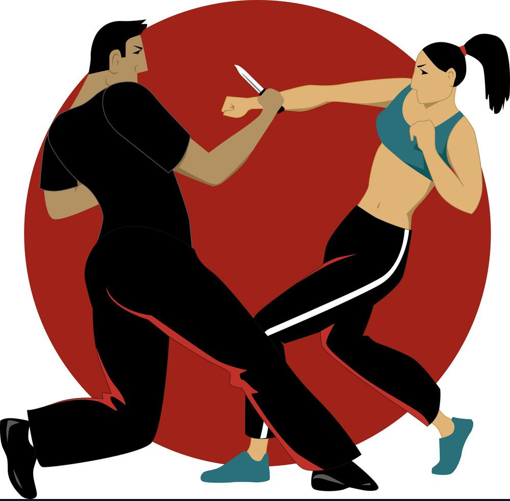
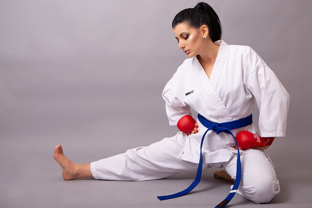
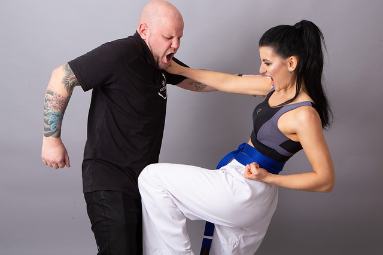
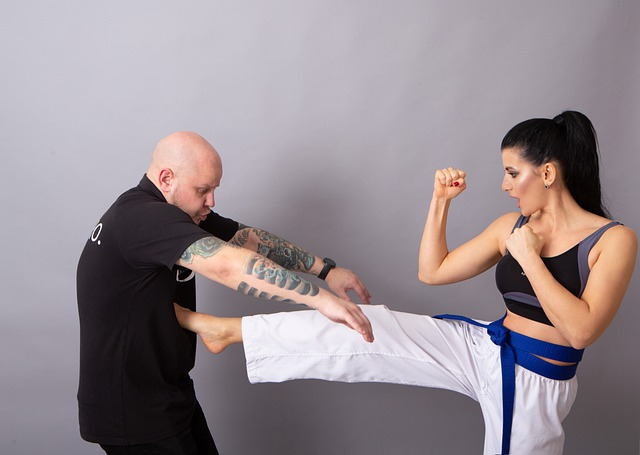

The Arm Grab Escape




Gracie Jiu Jistu or Brazilian Jiu Jistu self defense is somehow based on ground fighting. Now, why am I mentioning that? This technique and fighting style has been saving girls for the last 80 years.Undoubtedly, this is something you must try because whenever a sexual aggressor is about to attack you, they follow around 4 phases before that. This training will prepare you how to prevent them and stand up for yourself every time.

An attacker might tackle you from the back. What to do then? Here is a trick if he grabs you from behind forcefully. Push yourself inside Slide your hips out from any direction and turn Start attacking the groins of the person hard. Turn and grab the neck of the person with tight hands. You are all welcome to hit the groins with your knees. Here is a tip: If the person grabs you from behind and lifts you up, use back kicks to hit the groin area.

There is a myth that if a woman hits the man who is attacking her, the guy can then become more aggressive. Do you know why this happens? It's because you hit and look at him which gives him the time to think and attack with more aggression. You don't wanna do that. So, when you blow that first hit, commit to it and Don't stop. Be the aggressor before he becomes one..